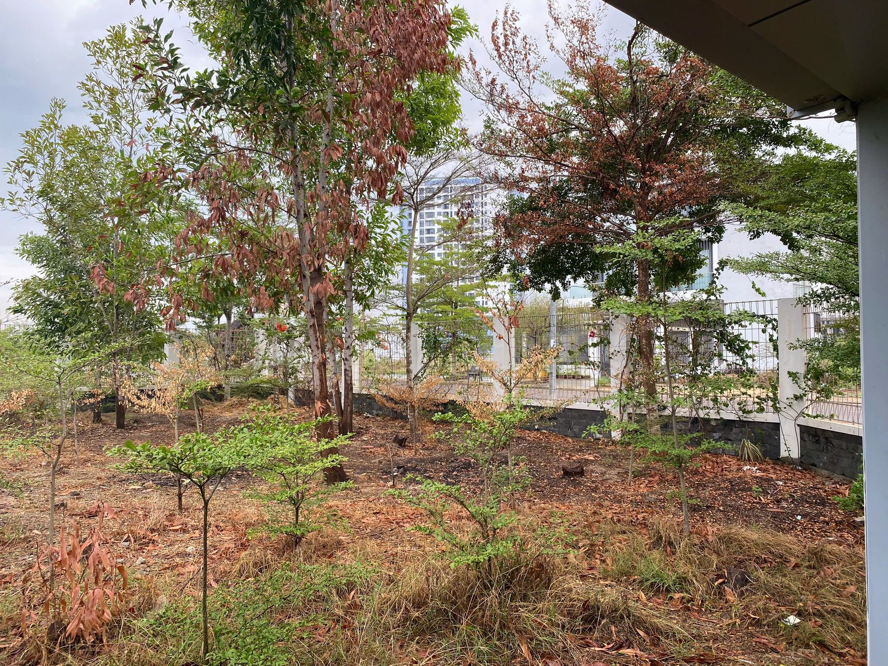
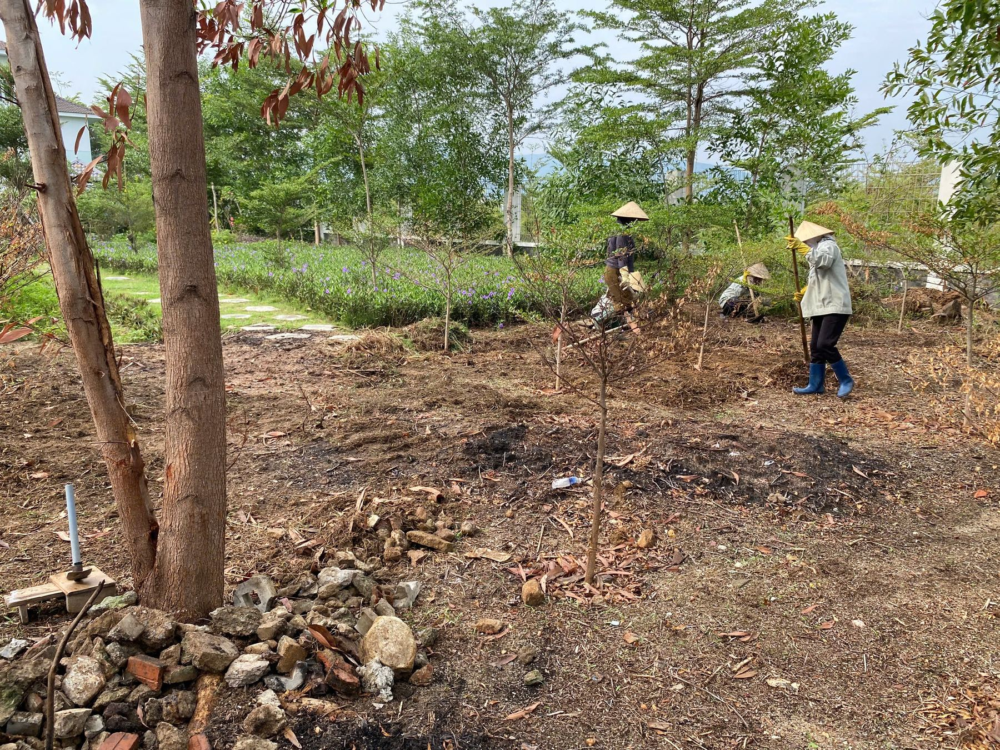
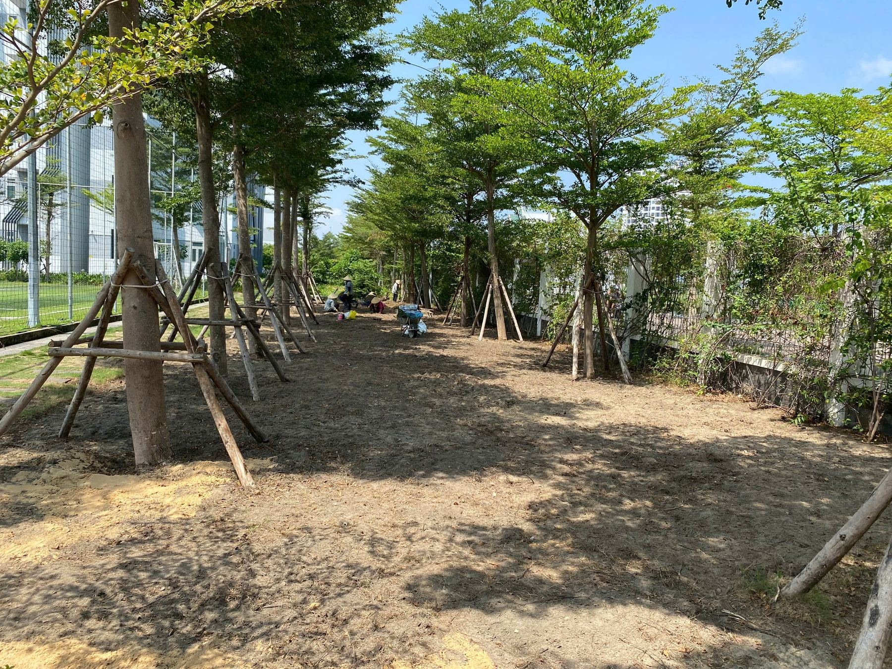
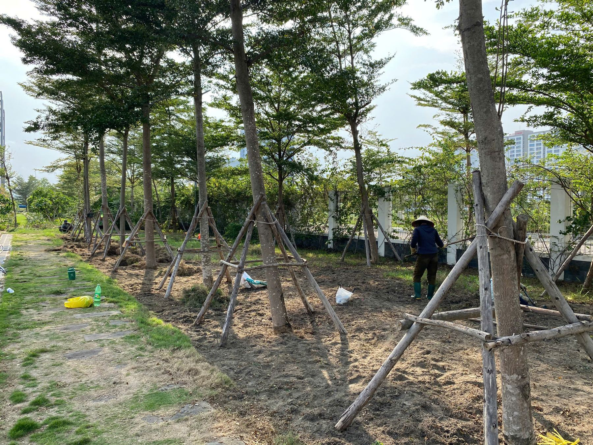
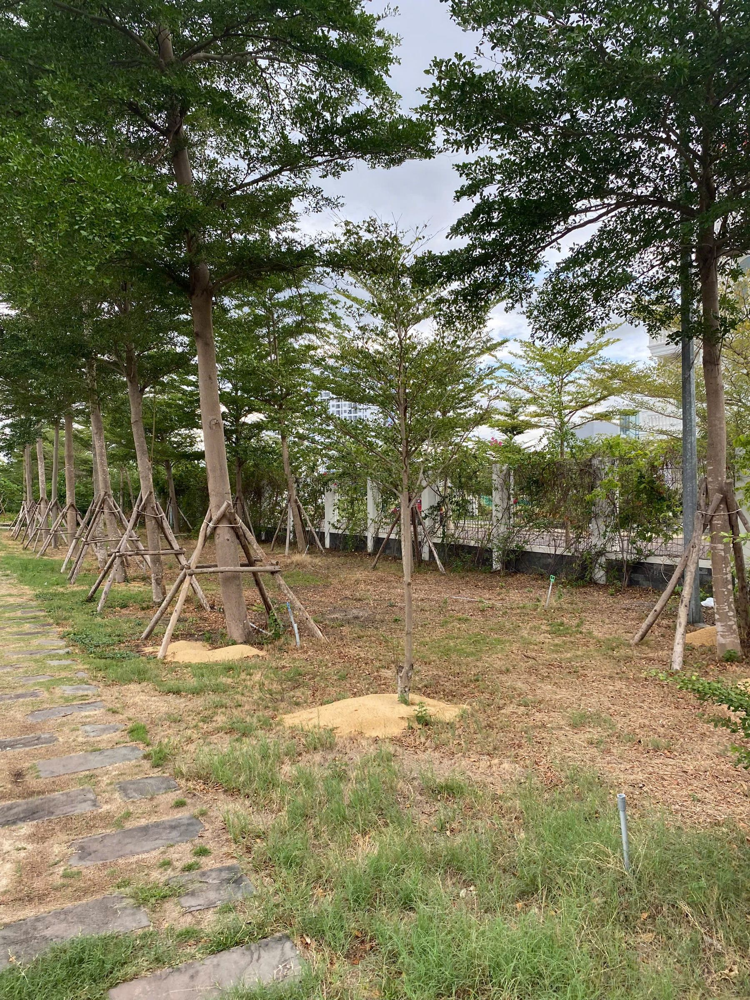
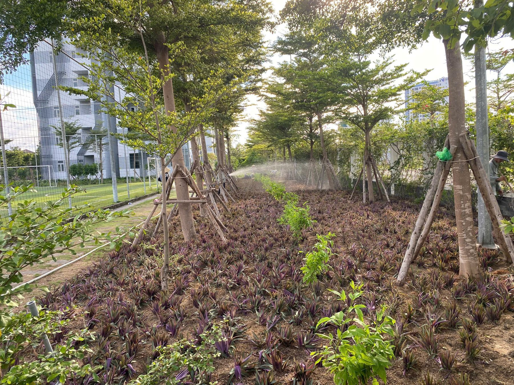
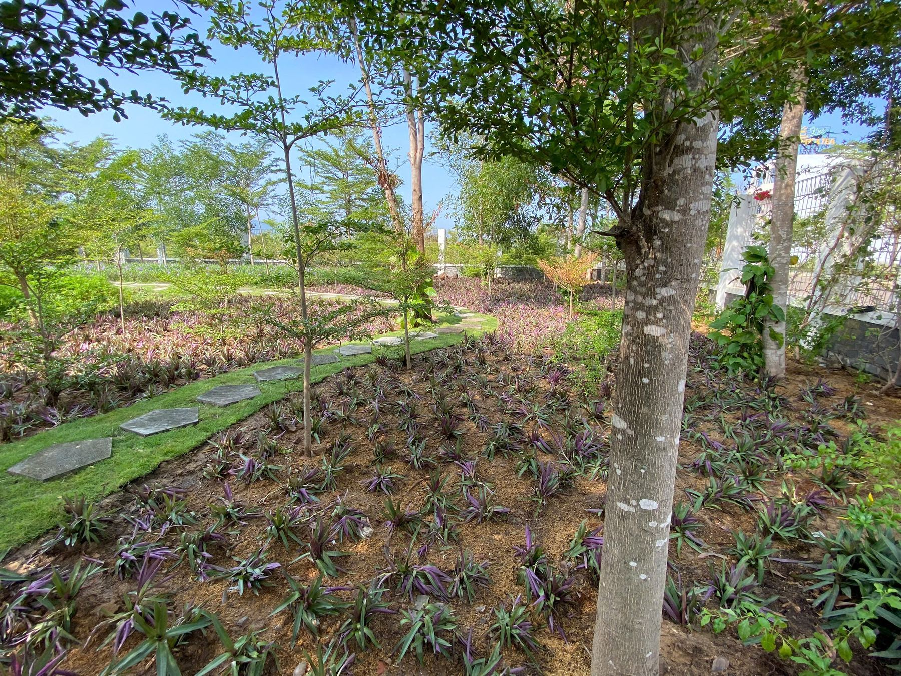
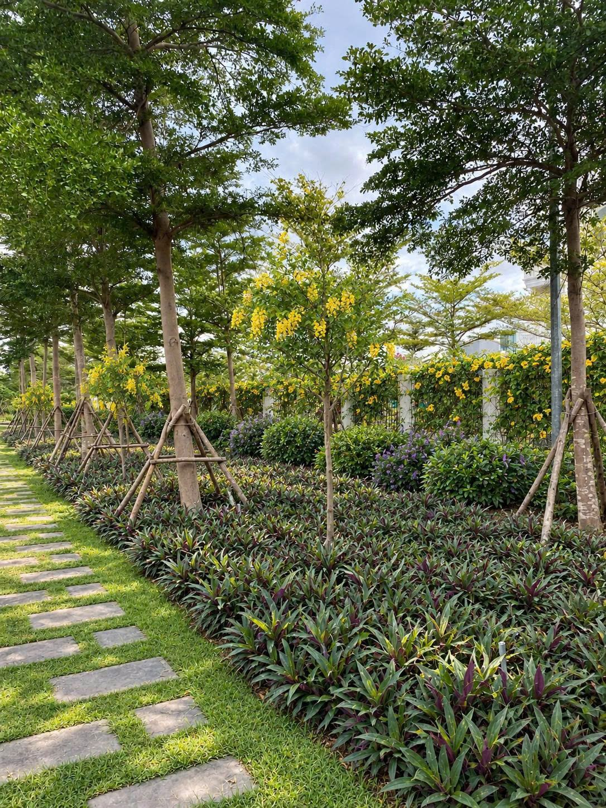

Hiện trạng trước cải tạo: bài toán tiết kiệm chi phí
Khi nhắc đến cải tạo cảnh quan, nhiều chủ đầu tư mặc định phải phá bỏ toàn bộ cây xanh cũ để trồng mới cho “sạch và đồng bộ”. Nhưng đây lại là cách làm tốn kém nhất — vừa mất chi phí xử lý cây cũ, vừa mất thêm chi phí mua cây mới với kích thước tương đương để cảnh quan không bị “trơ” trong thời gian đầu.
Trước cải tạo, khu vực có nhiều cây đã xuống sức: lá úa, cành khô, một số cây bị stress do thiếu chăm sóc trong thời gian dài. Thay vì đốn bỏ ngay, Hoàng Kim Landscape Studio chọn hướng đi ngược lại: khảo sát kỹ hiện trạng, phân loại cây theo khả năng phục hồi trước khi quyết định giữ lại hay thay thế.


Đánh giá và phân loại cây: giữ lại hay thay thế?
Đây là bước quyết định hiệu quả tiết kiệm chi phí của toàn bộ dự án. Mỗi cây được kiểm tra thủ công: độ chắc của gốc, độ đàn hồi của cành, tình trạng vỏ thân và mức độ phát triển của rễ. Từ đó, cây được phân theo ba nhóm: giữ nguyên vị trí, giữ lại nhưng cần chống cọc và chăm sóc phục hồi, hoặc loại bỏ vì đã mất khả năng sống.
Cách làm này đòi hỏi kinh nghiệm thực tế nhiều hơn là chỉ nhìn vào hình thức bên ngoài — một cây trông xơ xác vẫn có thể hồi phục hoàn toàn nếu bộ rễ còn khỏe, trong khi một cây có tán lá xanh nhưng gốc đã mục lại tiềm ẩn rủi ro về sau. Việc phân loại đúng ngay từ đầu giúp tránh lãng phí chi phí chăm sóc cho những cây không còn khả năng phục hồi, đồng thời không bỏ lỡ cơ hội giữ lại những cây có giá trị.
Giữ lại cây hiện trạng — bước tiết kiệm chi phí lớn nhất
Những cây thân gỗ đã có kích thước trưởng thành — thân to, tán rộng — được giữ nguyên vị trí, chống cọc lại theo đúng kỹ thuật để cây đứng vững trong giai đoạn phục hồi rễ, thay vì bị thay bằng cây mới cùng kích cỡ vốn có chi phí mua và vận chuyển cao hơn nhiều lần.
Cọc chống được dựng theo kiểu chân kiềng, cố định bằng dây buộc chắc chắn quanh thân, kết hợp bồi thêm đất và cát mới quanh gốc để kích thích rễ phát triển. Toàn bộ hàng cây dọc ranh khu đất được xử lý theo cách này, giúp cảnh quan giữ được độ “trưởng thành” ngay từ đầu — điều mà cây mới trồng phải mất nhiều năm mới đạt được.



Trồng bổ sung thảm nền — chọn cây tiết kiệm, phủ nhanh
Với phần nền, thay vì dùng các loại cây cảnh đắt tiền, studio chọn thảm lẻ bạn tía (Tradescantia spathacea) — giống cây chịu hạn tốt, giá thành thấp, phủ kín nhanh và không đòi hỏi chăm sóc phức tạp. Đây là lựa chọn tối ưu chi phí cho phần diện tích không thể giữ nguyên hiện trạng.
Hệ thống tưới phun được lắp đặt ngay sau khi xuống giống để đảm bảo cây bén rễ trong giai đoạn đầu, đặc biệt tại các khu vực chưa có tán cây che nắng trực tiếp. Chỉ sau một thời gian ngắn chăm sóc, thảm nền đã phủ kín và lên màu tím đặc trưng.


Kết quả sau cải tạo — cảnh quan trưởng thành mà không cần trồng mới toàn bộ
Sau thời gian phục hồi và chăm sóc, khu vực cải tạo lên thảm xanh dày, hàng cây hiện trạng đã hồi phục tán, kết hợp cùng lối đi đá tự nhiên tạo nên một không gian hoàn chỉnh — đạt hiệu quả thẩm mỹ tương đương phương án trồng mới toàn bộ, nhưng tiết kiệm đáng kể chi phí và thời gian thi công.


Vì sao nên chọn giải pháp cải tạo tận dụng cây hiện trạng?
Trồng mới toàn bộ
Chi phí mua và vận chuyển cây kích thước lớn; mất nhiều năm để cây mới đạt độ trưởng thành tương đương; phát sinh chi phí xử lý cây cũ bị phá bỏ.
Tận dụng cây hiện trạng
Tiết kiệm chi phí mua cây mới; cảnh quan có độ trưởng thành ngay từ đầu; rút ngắn thời gian thi công; giảm tác động môi trường do hạn chế đốn bỏ cây xanh không cần thiết.
Cải tạo cảnh quan không phải lúc nào cũng đồng nghĩa với “làm lại từ đầu”. Với kinh nghiệm đánh giá và phục hồi cây hiện trạng, Hoàng Kim Landscape Studio giúp khách hàng tiết kiệm chi phí đáng kể mà vẫn có được không gian xanh trưởng thành, bền vững.